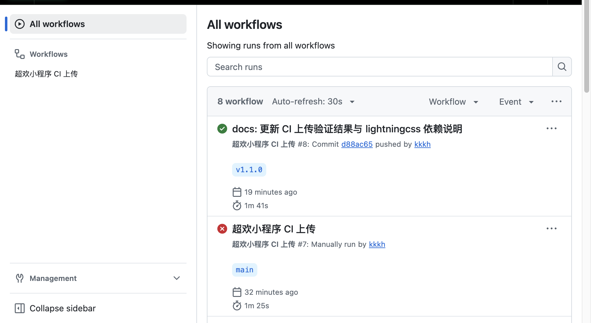
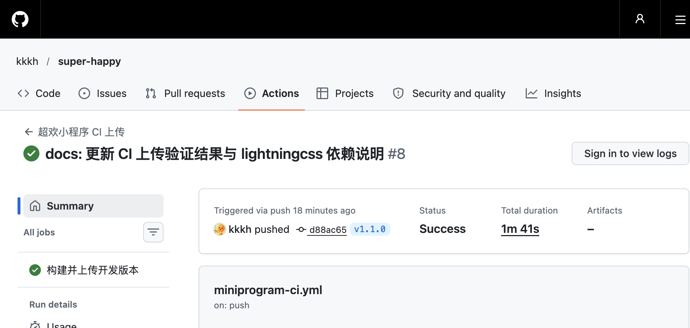

OVERVIEW
一页速览
这套 CI 只做一件事：把「构建、测试、编译、上传」压缩成一次 tag push。 你不再需要在开发者工具里手动点构建 npm、等编译、填版本号、再点上传。 一条命令触发，GitHub Actions 负责全部发布动作。
发布不再靠记忆
构建、类型检查、271 项测试、npm 构建、编译与上传，全部在 Runner 上按固定顺序执行。
版本只有一个真相
Git tag、APP_VERSION、微信后台版本号必须一致；不一致时流水线直接失败。
失败有迹可循
每一步都有独立超时与日志；上传结果会输出主包 / 分包体积，失败时不会一直挂到 Runner 上限。
- 打开开发者工具，逐项确认设置
- 手动构建 npm、编译、上传
- 手填版本号与备注，容易和代码版本漂移
- 忘记跑测试，问题留到真机才发现
- 同步 APP_VERSION，提交代码
- 推送一个 v* 标签
- CI 自动构建、测试、编译、上传
- 在微信后台直接看到开发版与包体积
本手册中的运行截图、耗时、包体积均来自 2026-11-08 的真实 CI 运行：版本 1.1.0，主包 1.07 MB，整包 4.33 MB。
PIPELINE ANATOMY
流水线解剖
触发方式只有两种：推送 v* 标签，或在 Actions 页面手动运行。 触发后，Runner 按四个阶段推进，任何一步失败都会立即停在当前步骤，不会带着问题继续上传。
准备 PREPARE
检出代码、安装 Node 22，并把本次 Runner 的依赖源切换为 npmjs，避免跨境访问 npmmirror 过慢。
质量门禁 QUALITY GATE
先装依赖，再编译 Tailwind、跑类型检查与全部测试。任何一项失败，后面不会继续。
发布校验 RELEASE CHECK
标签版本必须与 APP_VERSION 一致；随后把 GitHub Secret 解码到 Runner 临时目录，权限 600。
上传收口 UPLOAD & CLEANUP
scripts/ci-upload.js 自动构建根包与 tools-core 的 npm 产物，编译 313 个文件，再调用微信上传接口；结束后无条件清理密钥。
三层分工
GitHub Actions
负责触发、环境、质量门禁、密钥临时落盘与清理。它不直接关心小程序业务，只负责把发布流程编排对。
miniprogram-ci
负责本地编译、npm 构建与调用微信上传接口。它和开发者工具使用同一份 project.config.json，保证行为一致。
微信后台
接收开发版本、审核、发布与灰度。CI 只负责上传开发版；提审与发布仍然需要在后台手动完成。
Workflow 只负责编排，真正的构建与上传在 scripts/ci-upload.js 中。这样本地应急上传和 CI 上传走同一套逻辑，不会出现「本地能传、CI 传不了」的双份实现。
FIRST-TIME SETUP
首次配置
首次配置只需要做一次。核心是三件事：拿到上传密钥、把它放进 GitHub Secret、确认 IP 白名单不会拦住 Runner。 配置完成后，日常发布只需要一条 tag。
生成小程序上传密钥
进入小程序后台，生成一枚只用于代码上传的 RSA 私钥。它等价于「发布钥匙」，不要发到聊天、不要写进代码、不要提交到仓库。
# 密钥下载后放到本地 private/private.key，并收紧权限
mkdir -p private
mv ~/Downloads/private.key private/private.key
chmod 600 private/private.key仓库已经通过三重规则排除它：.gitignore、packOptions.ignore、scripts/ci-upload.js 的 IGNORES。
写入 GitHub Secret
进入 GitHub 仓库的 Settings → Secrets and variables → Actions，新建 Secret：
Secret 名称
MP_CI_PRIVATE_KEY_BASE64Secret 值
把密钥转成单行 Base64。macOS 直接复制到剪贴板；Linux 输出到终端后手动复制。
# macOS：直接复制到剪贴板，不打印密钥
base64 -i private/private.key | pbcopy
# Linux：输出单行 Base64
base64 -w0 private/private.key
# 可选：直接用 gh CLI 写入 Secret（推荐）
base64 -i private/private.key | gh secret set MP_CI_PRIVATE_KEY_BASE64 --repo kkkh/super-happyWorkflow 会把 Secret 解码到 $RUNNER_TEMP/mp-ci/private.key，设置 chmod 600，并在 if: always() 的清理步骤中删除整个临时目录。
确认 IP 白名单
这是整套配置里最容易卡住的一步。微信后台上传接口会校验调用方公网 IP；GitHub-hosted Runner 的出口 IP 每次运行都会变化。
本项目已关闭 IP 白名单，CI 上传稳定成功。若未来重新开启，必须把 Runner 的出口 IP 加进去；但 GitHub-hosted 的 IP 不固定，最省事的替代方案是使用固定出口 IP 的自托管 Runner。
| 方案 | 适用场景 | 代价 |
|---|---|---|
| 关闭 IP 白名单 | GitHub-hosted Runner，追求稳定 | 安全边界收缩到「上传密钥本身」 |
| 自托管 Runner | 需要保留白名单，且有固定公网 IP | 需要维护一台常驻机器 |
| 加 GitHub IP 段 | 不推荐 | IP 段多且会变化，维护成本高 |
确认 Workflow 文件
文件位于 .github/workflows/miniprogram-ci.yml。它只监听标签与手动触发，不会在每次普通 push 时上传。
on:
push:
tags:
- 'v*'
workflow_dispatch:
inputs:
version:
description: '上传版本号（留空则使用 APP_VERSION）'
required: false
desc:
description: '项目备注'
required: false同时确认 permissions: contents: read 与 concurrency 存在：前者收缩权限，后者避免两次上传并发冲突。
密钥权限 600 → Secret 已写入 → IP 白名单已处理 → Workflow 在默认分支 → 推送一个测试 tag。四项都满足，就可以进入日常发布。
DAILY RELEASE
日常发布
日常只有三种入口：标签发布、Actions 手动触发、本机应急上传。优先使用标签发布，因为它能把「代码版本」和「上传版本」绑在同一条 Git 记录上。
标签发布
先同步 APP_VERSION，提交代码，再打 tag。标签版本会自动成为上传版本。
# 1. 修改 core/constants/index.ts 的 APP_VERSION
# 2. 提交代码
git add core/constants/index.ts
git commit -m "release: v1.1.1"
# 3. 打 tag 并推送（tag = v + APP_VERSION）
git tag v1.1.1
git push origin main v1.1.1Actions 手动触发
适合补发、验证或不想打 tag 的场景。版本号留空时自动读取 APP_VERSION。
gh workflow run miniprogram-ci.yml \
--repo kkkh/super-happy \
--ref main \
-f version=1.1.1 \
-f desc="手动补发 v1.1.1"本机应急上传
CI 不可用时，用本机密钥直接上传。和 CI 共用同一个脚本与同一套 npm 构建逻辑。
# 默认读取 APP_VERSION
npm run ci:upload
# 指定版本与备注
npm run ci:upload -- \
--version 1.1.1 \
--desc "本机应急补发"版本号只认一个真相
| 位置 | 当前值 | 作用 | 发布规则 |
|---|---|---|---|
| core/constants/index.ts | 1.1.0 | 运行时唯一版本真相，我的页 / 设置页 / 驾驶舱读取 | 发布前必须递增 |
| Git tag | v1.1.0 | 触发 CI，并作为上传版本来源 | 去掉 v 后必须等于 APP_VERSION |
| 微信后台 | 1.1.0 | 审核与发布标识 | 由 CI 自动写入 |
| package.json | 1.0.0 | npm 元数据，不参与小程序运行时 | 建议同步，非强制 |
配置期可以修正错误标签；一旦版本已经对外发布，就保持 tag 不可变。需要修复时递增 APP_VERSION 并打新 tag，避免同一条 Git 记录对应两个不同的上传结果。
MECHANICS
关键机制
这一节解释「为什么它能稳定跑」，也是出问题时最值得回看的六个细节。
版本号自动读取
ci-upload.js 直接从 TypeScript 常量里读取 APP_VERSION，不依赖手工输入，也不依赖 package.json。
const match = source.match(
/APP_VERSION\s*=\s*['"]([^'"]+)['"]/
)Runner 内切换 npmjs
仓库锁文件指向 npmmirror；GitHub-hosted Runner 跨境访问可能极慢。Workflow 只在 Runner 内重写 URL，不改仓库里的锁文件。
fs.writeFileSync(
f,
fs.readFileSync(f, 'utf8').replaceAll(
'https://registry.npmmirror.com',
'https://registry.npmjs.org'
)
)双包 npm 构建
上传前自动执行两次 ci.packNpmManually：根包生成 2 个 npm 产物，tools-core 生成 2 个。与 packNpmRelationList 完全对齐。
密钥只活一次
Secret 解码到临时目录，写入时直接指定 mode 0o600；清理步骤使用 if: always()，即使上传失败也会删除。
fs.writeFileSync(
process.env.KEY_PATH,
Buffer.from(raw, 'base64'),
{ mode: 0o600 }
)标签与版本校验
标签触发时，Workflow 先比较 ${GITHUB_REF_NAME#v} 与 APP_VERSION；不一致直接失败，不会上传一个「版本号对不上」的开发版。
TAG_VERSION="${GITHUB_REF_NAME#v}"
if [ "$TAG_VERSION" != "$APP_VERSION" ]; then
exit 1
fi结束后强制收口
miniprogram-ci 的编译器会留下子进程 / 定时器句柄。脚本在日志刷新后强制退出，避免上传已经失败、CI 却挂到 10 分钟超时。
function finish(code) {
process.exitCode = code
setTimeout(() => process.exit(code), 200)
}Workflow 里每一步都设置了 timeout-minutes。即使未来某个依赖突然变慢，失败也会在可控时间内发生，而不是把 Runner 额度耗到 30 分钟上限。
PROOF OF WORK
真实运行结果
以下截图来自公开的 GitHub Actions 页面。Run #8 由 v1.1.0 标签触发，状态 Success，耗时 1 分 41 秒。 列表里仍保留配置期的失败记录——它们不是噪音，而是这次接入的排障轨迹。

Run #8 关键数据

包体积账本
| 包 | 体积 | 说明 | 余量 |
|---|---|---|---|
| 主包 | 1.07 MB | 核心底座、TabBar 页面、全局组件与 Store | 距 1500KB 预算约 400KB |
| campus | 1.49 MB | 园枢校园应用详情，22 张真机界面 | 距 2MB 上限约 0.51 MB |
| works | 1.01 MB | 作品集 hub / list / detail 与图集 | 距 2MB 上限约 0.99 MB |
| grow | 318.2 KB | 简历域、设置、驾驶舱与 Cyber Space OS | 充足 |
| tools-core | 288.1 KB | 18 个计算 / 文本工具 | 充足 |
| tools-media | 172.3 KB | 5 个图片工具 | 充足 |
| 整包 | 4.33 MB | 全部主包 + 5 个分包 | 远低于整包上限 |
主包 1.07 MB，低于平台 2MB 硬上限，也仍在项目 1500KB 预算内。发布前只需关注新增主包资源。
campus 已到 1.49 MB。新增真机图前先压缩，或把大图迁到独立资源分包，避免单个分包突破 2MB。
TROUBLESHOOTING
故障排查
排查顺序：先看失败步骤名，再看该步骤最后 20 行日志，不要从整份日志的第一行开始猜。 下面九种情况覆盖了这次接入过程中真实踩过的坑。
01 npm ci 报 lock 文件不同步 / 缺 lightningcss
npm ci 报 Missing: lightningcss@1.33.0 from lock file，并列出各平台包。
@weapp-tailwindcss/postcss 的 peer 依赖需要 1.33.0，而根包被解析到 1.32.0，锁文件缺少 Linux 平台包。
把 lightningcss 显式加入 devDependencies 并重新生成锁文件，提交 package-lock.json。
npm install --save-dev lightningcss@^1.33.0
npm ci --dry-run --os=linux --cpu=x6402 GitHub Actions 卡在 npm ci 十几分钟
安装根包依赖 长时间不结束，日志没有明显报错。
锁文件里 1600+ 个 tarball 指向 registry.npmmirror.com，GitHub-hosted Runner 跨境拉取不稳定。
Workflow 在 npm ci 前把锁文件 URL 临时替换为 npmjs；仓库本身仍保留国内镜像配置，不影响本地安装。
# 只改 Runner 工作区，不改仓库文件
node -e "const fs=require('fs');for(const f of ['package-lock.json','subpackages/tools-core/package-lock.json']){fs.writeFileSync(f,fs.readFileSync(f,'utf8').replaceAll('https://registry.npmmirror.com','https://registry.npmjs.org'))}"03 build:style 或某个步骤超时
步骤在 5 / 10 分钟后被标记为 timed out，日志停在某一步。
依赖源慢、Runner 瞬时抖动，或进程没有正常退出。
每个步骤已经设置独立 timeout-minutes；若 build:style 超时，先确认 npmjs 切换生效，再清理 Actions 缓存重跑。持续失败时，本地执行一次并提交最新的 styles/generated/tailwind.wxss。
04 本地测试全过，CI 上却有一个测试失败
pass 270 / fail 1，失败项是环境光昼夜相位。
测试用固定 +08:00 日期，而 Runner 是 UTC；getHours() 按设备本地时区读取，导致 12:00 被解析成凌晨。
测试改用本地时间构造器 new Date(2026, 10, 5, 12, 0, 0)，不依赖 Runner 时区。
// 改前：固定时区，在 UTC Runner 上会漂移
new Date('2026-11-05T12:00:00+08:00')
// 改后：设备本地时间，跨时区稳定
new Date(2026, 10, 5, 12, 0, 0)05 invalid ip / 40164
上传日志出现 invalid ip: x.x.x.x，并提示 IP 不在白名单。
微信后台开启了 IP 白名单，而 GitHub-hosted Runner 每次运行使用不同出口 IP。
当前项目已关闭 IP 白名单。若必须开启，改用固定出口 IP 的自托管 Runner，并把该 IP 加入白名单；不要试图追踪 GitHub 每次运行的临时 IP。
06 上传 step 一直不结束，直到 10 分钟超时
日志已经打印 [ci] 上传失败：invalid ip，但步骤仍然卡住，最后被 timeout 杀掉。
miniprogram-ci 编译器留下子进程 / 定时器句柄，Node 进程不会自动退出；仅设置 process.exitCode 不够。
脚本在日志刷新后 200ms 强制执行 process.exit(code)，让失败立即收口。
07 module is not defined / 白屏
开发者工具或 CI 编译后白屏，控制台提示模块找不到。
miniprogram_npm 未构建，或 tools-core 分包 npm 产物缺失。
CI 上传会自动执行 packNpmManually；本地开发时在开发者工具执行「工具 → 构建 npm」，并确认根包与 subpackages/tools-core 两处产物都存在。
08 标签版本与 APP_VERSION 不一致
Workflow 在「校验标签与 APP_VERSION」步骤失败。
打了 v1.1.1 标签，但代码里的 APP_VERSION 仍是 1.1.0。
先改常量、提交，再打 tag；不要反过来。标签版本去掉前缀 v 后必须与常量完全一致。
09 主包 / 单分包超过 2MB
上传失败，提示包体积超限。
主包误放了大图，或某个分包新增资源过多。
先看上传日志里的分包体积表；主包目标保持在 1500KB 预算内。campus 已到 1.49MB，新增真机图前先压缩或迁到独立资源分包。
RELEASE CHECKLIST
发布检查清单
这张清单可以直接勾选。全部完成后，再点「发布」或推送标签。
命令速查
| 场景 | 命令 | 说明 |
|---|---|---|
| 本机上传 | npm run ci:upload | 读取 APP_VERSION，自动构建 npm |
| 指定版本 | npm run ci:upload -- --version 1.1.1 | 版本与常量不一致时给出警告 |
| 手动触发 CI | gh workflow run miniprogram-ci.yml | 支持 version / desc 输入 |
| 查看运行 | gh run list --repo kkkh/super-happy | 获取 databaseId 与状态 |
| 跟踪运行 | gh run watch <id> --repo kkkh/super-happy | 实时输出步骤状态 |
| 写入 Secret | base64 -i private/private.key | gh secret set … | 不打印密钥，直接写入仓库 |
SECURITY & MAINTENANCE
安全与维护
CI 的便利性来自「密钥可以在无人值守时上传代码」。因此，密钥管理比流水线本身更重要。
密钥生命周期
配置过程中密钥曾出现在对话里。只要密钥出现在聊天、日志、录屏或截图里，就应当视为已泄露：在小程序后台重置上传密钥，然后同步替换本地 private/private.key 与 GitHub Secret。
轮换步骤
- 小程序后台 → 开发设置 → 小程序代码上传 → 重置上传密钥。
- 下载新 .key，覆盖 private/private.key，保持 600。
- 重新写入 Secret：gh secret set MP_CI_PRIVATE_KEY_BASE64。
- 手动跑一次 CI，确认上传成功后再删除旧记录。
维护原则
- 标签一旦发布就保持不可变；修复走新版本号。
- 升级 lightningcss / weapp-tailwindcss 时一起更新锁文件。
- 每次改 Workflow 后，先手动触发一次，再打 tag。
- 不要把密钥、二维码、临时截图提交到仓库。
APPENDIX
附录
文件地图
| 路径 | 职责 | 是否入库 |
|---|---|---|
| .github/workflows/miniprogram-ci.yml | 触发、环境、门禁、密钥生命周期、上传编排 | 是 |
| scripts/ci-upload.js | 版本读取、npm 构建、miniprogram-ci 上传、体积输出 | 是 |
| package.json | ci:upload 脚本入口 | 是 |
| private/private.key | 本机上传密钥 | 否，三重忽略 |
| project.config.json | 打包忽略规则、npm 构建关系、Skyline 配置 | 是 |
| core/constants/index.ts | APP_VERSION 唯一版本真相 | 是 |
术语表
| 术语 | 含义 |
|---|---|
| 上传密钥 | 小程序后台生成的 RSA 私钥，用于 CI 调用代码上传接口。 |
| 开发版 | 上传后生成的版本，可在后台提交审核；还不是线上版。 |
| 体验版 | 把开发版设为体验版后，体验成员可扫码使用。 |
| 线上版 | 审核通过并发布后，对全体用户生效的版本。 |
| Runner | GitHub Actions 执行 Job 的机器；hosted Runner 出口 IP 不固定。 |
| APP_VERSION | 运行时读取的版本常量，页面展示与上传版本都以它为准。 |
| miniprogram-ci | 微信官方提供的 Node 上传库，可在无开发者工具环境编译并上传。 |